Collab — платформа для совместного редактирования кода в реальном времени
Автор: Artsiom Harminovich
Руководитель: Maksym Svynarenko
Критерий: Refined UX
Ноябрь 2026
Все экраны в этом документе — снимки работающего приложения. Их делает автотест
e2e/tests/ux-screens.spec.ts на тестовых данных, поэтому снимки можно повторить
после любых изменений интерфейса. Интерфейс на русском языке, тёмная тема (есть и светлая).
1. Продукт и пользователи
Collab — общее рабочее пространство проекта в браузере: файлы кода, документы Markdown, доска для схем,
чат и запуск кода. В проект заходят по одной ссылке, гость — без регистрации.
Пользователь
Цель
Что ему важно
Студент — владелец проекта
Быстро собрать команду над кодом
Одна ссылка вместо приглашений в 4–5 сервисах; проект не теряется после сессии
Гость (друг, однокурсник)
Помочь с кодом прямо сейчас
Ничего не устанавливать и не регистрироваться; сразу печатать в общем файле
Наставник или преподаватель
Посмотреть код и подсказать
Видеть, кто что правит; роль «наблюдатель», чтобы ничего не сломать
Принципы интерфейса
Вход за минуту. Ссылка → имя → редактор. Никаких лишних шагов для гостя.
Правки не теряются. При обрыве связи можно продолжать работу, состояние видно в шапке.
Ошибка объясняет, что делать. Текст говорит, что случилось и как это исправить, без кодов ошибок.
Ошибку видно до отправки, если это возможно. Поле сразу показывает проблему, а кнопка остаётся неактивной.
Безопасность важнее подсказки. При входе текст не сообщает, какое поле неверно, чтобы не выдавать, есть ли аккаунт.
2. Сценарий 1. Гость присоединяется по ссылке и правит файл
Пользователь: гость без аккаунта. Начало: получил ссылку-приглашение в мессенджере.
Результат: гость правит файл вместе со всеми, правки видны у каждого.
Основной путь
Гость открывает ссылку. Экран приглашения показывает, кто зовёт, название проекта и роль (экран 3).
Вводит имя. Пока поле пустое, кнопка неактивна.
Нажимает «Присоединиться как гость». Открывается проект.
Гость печатает в файле. Другие видят текст и курсор с его именем, в шапке — «Синхронизировано».
Альтернативы и ошибки
Условие
Что видит пользователь
Что дальше
Ссылка неверная или владелец её заменил
«Не получилось присоединиться. Ссылка-приглашение недействительна или устарела» (экран 4)
Кнопка «К моим проектам»; попросить новую ссылку
Имя не введено
Кнопка «Присоединиться как гость» неактивна (экран 3)
Ввести имя (до 100 символов)
Ссылка даёт роль «наблюдатель»
«Вы сможете смотреть, но не менять» (экран 5)
Файлы открываются только для чтения
Человек уже вошёл в аккаунт
Экран приглашения пропускается
Сразу добавлен в проект
Связь оборвалась во время правки
В шапке «Подключение…» или «Офлайн — правки сохранятся локально» (экран 8)
Продолжать печатать; после восстановления связи правки сливаются, в шапке снова «Синхронизировано» (экран 9)
Рис. 1 — Схема сценария 1 с ветками и ошибками
3. Сценарий 2. Регистрация, вход и новый проект
Пользователь: студент, будущий владелец проекта. Начало: впервые открыл сайт.
Результат: проект создан (пустой или из репозитория GitHub), ссылка-приглашение отправлена команде.
Открывается список «Мои проекты». «Новый проект» → название → проект открыт.
Меню проекта → «Пригласить»: выбрать роль (редактор или наблюдатель) и скопировать ссылку.
Альтернативы и ошибки
Условие
Что видит пользователь
Что дальше
Email уже зарегистрирован
«Этот email уже зарегистрирован» (экран 2)
Перейти ко входу по ссылке «Войти»
Пароль короче 8 символов
Подсказка под полем; браузер не отправляет форму
Ввести пароль подлиннее
Неверный email или пароль при входе
«Неверный email или пароль» — без указания, что именно неверно (экран 1)
Ввести снова или войти как гость
Проект из GitHub: вставлена не ссылка на репозиторий
«Не похоже на ссылку на репозиторий GitHub. Пример: https://github.com/owner/repo» (экран 7)
Исправить ссылку по примеру
Репозиторий приватный или не существует
«Репозиторий или ветка не найдены. Приватные репозитории пока не поддерживаются.»
Проверить адрес; открыть доступ к репозиторию
GitHub не отвечает
«Не удалось связаться с GitHub. Попробуйте ещё раз.»
Повторить позже
Владелец хочет закрыть старую ссылку
«Новая ссылка»: старая сразу перестаёт работать
Отправить новую ссылку
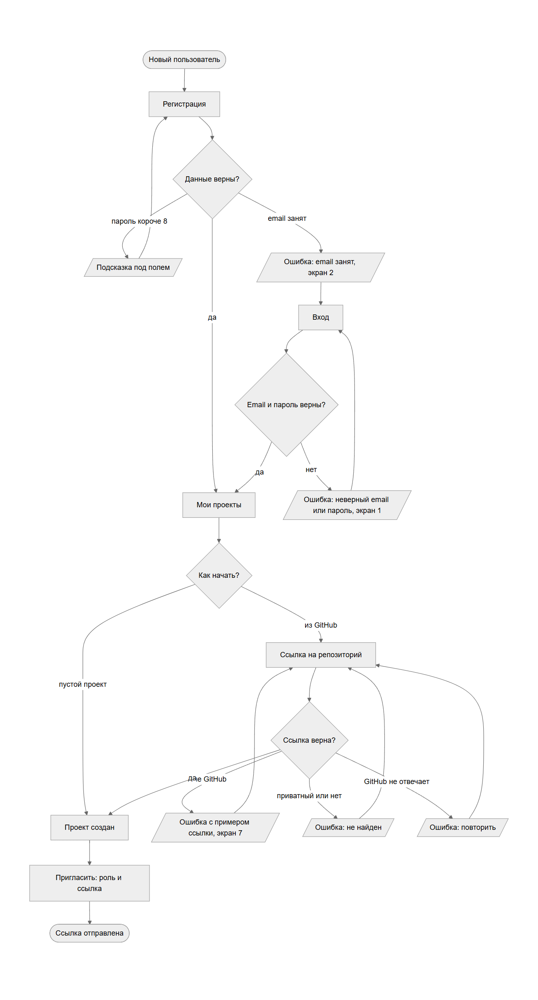
Рис. 2 — Схема сценария 2 с ветками и ошибками
4. Сценарий 3. Файлы и общий запуск кода
Пользователь: редактор проекта. Начало: открыт проект. Результат: программа
запущена, все участники видят один и тот же вывод, статус и время работы.
Основной путь
«Создать файл» или «Переименовать»: имя с папкой, например src/app.py.
Пишет код вместе с другими.
«Запустить». Вывод, статус и время появляются у всех, у кого открыт файл.
Альтернативы и ошибки
Условие
Что видит пользователь
Что дальше
Имя файла уже занято
Под полем сразу при вводе: «Файл с таким именем уже есть»; кнопка неактивна (экран 6)
Выбрать другое имя
Имя начинается или заканчивается на «/», содержит «..»
«Имя не должно начинаться или заканчиваться на «/» и содержать «..»»
Исправить имя
Файл не на JavaScript и не на Python
«Запускать можно только файлы JavaScript и Python»
Запускать файл с кодом
Публичный сервер с кодом доступа
Окно «Код доступа»; при ошибке «Неверный код доступа»
Ввести код, его даёт владелец сервера
Сервис запуска недоступен
«Запуск кода сейчас недоступен. Попробуйте чуть позже.»
Повторить позже; правка файлов работает
Слишком много запусков сразу
«Сейчас запускается слишком много программ. Попробуйте через минуту.»
Повторить через минуту
Программа работает дольше 10 с
Статус «превышено время (10 с)», программа остановлена
Проверить бесконечный цикл
Ошибка в программе
Статус «ошибка», строка с ошибкой подсвечена, сообщение показано первым
Перейти к строке и исправить
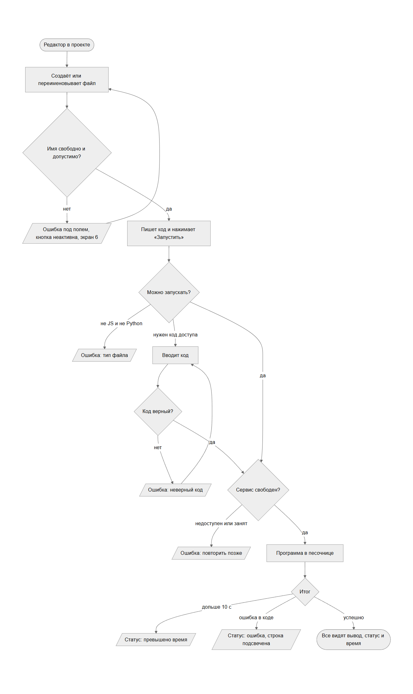
Рис. 3 — Схема сценария 3 с ветками и ошибками
5. Визуальный стиль
Стиль спокойный и плотный, как в рабочих мессенджерах: тёмная тема по умолчанию, светлая — по
переключателю в меню профиля. Все цвета заданы токенами (CSS-переменные в apps/web/src/index.css,
имена в tailwind.config.js), поэтому обе темы используют одни и те же имена.
Цвета
Токен
Тёмная тема
Светлая тема
Где используется
canvas
30 31 34
227 229 232
Фон приложения
surface
43 45 49
242 243 245
Панели, карточки, окна
main
49 51 56
255 255 255
Область редактора
fg / muted
Основной и второстепенный текст
accent
88 101 242 (одинаковый в обеих темах)
Главные кнопки, ссылки, фокус
ok
45 199 112
21 105 58
Успех, «в сети»
bad
252 135 139
176 28 28
Ошибки и предупреждения об удалении
warn
240 178 50
140 72 6
Роль «владелец», «Подключение…»
Цвета текста подобраны с контрастом не ниже 4,5 : 1 к фону (WCAG 2.1 AA), поэтому цвет ошибки
в светлой теме темнее, чем в тёмной.
Шрифты, размеры, формы
Что
Значение
Шрифт интерфейса
Inter Variable; код — JetBrains Mono Variable (оба подключены в приложение, не зависят от системы)
Размеры текста
16 px — то, что читают; 14 px — то, что рядом с ним (подсказки, подписи); 12 px — метки. Заголовки 20 и 24 px
Скругления
8 px у кнопок и полей, 12 px у окон и карточек
Тени
card для карточек, pop для окон и меню
Иконки
Lucide, контурные, 14–24 px, всегда с подписью или aria-label
Анимация
Короткая: появление 0,18 с, окно 0,2 с. Только чтобы показать, откуда что появилось
Ширина экрана
От 360 до 1920 px; на телефоне панели открываются поверх редактора
6. Библиотека компонентов
Компоненты лежат в apps/web/src/components/ui и components/layout.
Ниже — состояния, которые важны для ошибок и валидации, и снимки настоящих компонентов.
Компонент
Назначение
Варианты и состояния
Button
Все действия
primary (одно главное действие на экране), secondary, ghost, danger (удаление); размеры sm/md/lg; неактивная; «в процессе» с другим текстом («Входим…», «Создаём…»)
Field
Поле ввода с подписью
подпись над полем; подсказка под полем; подсказка-ошибка красным; фокус с рамкой цвета accent
ErrorNote
Ошибка формы от сервера
красная плашка над полями, role="alert" — экранный диктор читает её сразу
Modal
Диалоги
заголовок, пояснение, кнопка «Закрыть», закрытие по Esc; фокус остаётся внутри окна
ErrorScreen
Страница не открылась
иконка, понятная причина, одна кнопка выхода (экран 4)
инициалы на цвете человека; тот же цвет у его курсора
Segmented, Spinner, Logo
Переключатели, ожидание, знак
—
FileTree, SidePanel, ProjectHeader
Каркас проекта
кнопки файла появляются при наведении и фокусе; чат и участники в боковой панели
Button primary
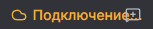
Статус синхронизации при обрыве связи
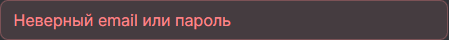
ErrorNoteField с подсказкой
Modal с ошибкой в подсказке поля и неактивной главной кнопкой
7. Ключевые экраны с ошибками и валидацией
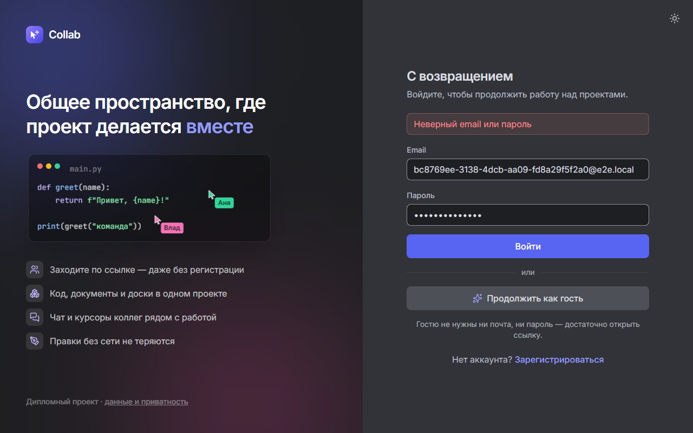
Экран 1 — Вход: «Неверный email или пароль». Сообщение не говорит, какое поле неверно, чтобы нельзя было узнать, есть ли такой аккаунт. Введённые данные остаются в полях
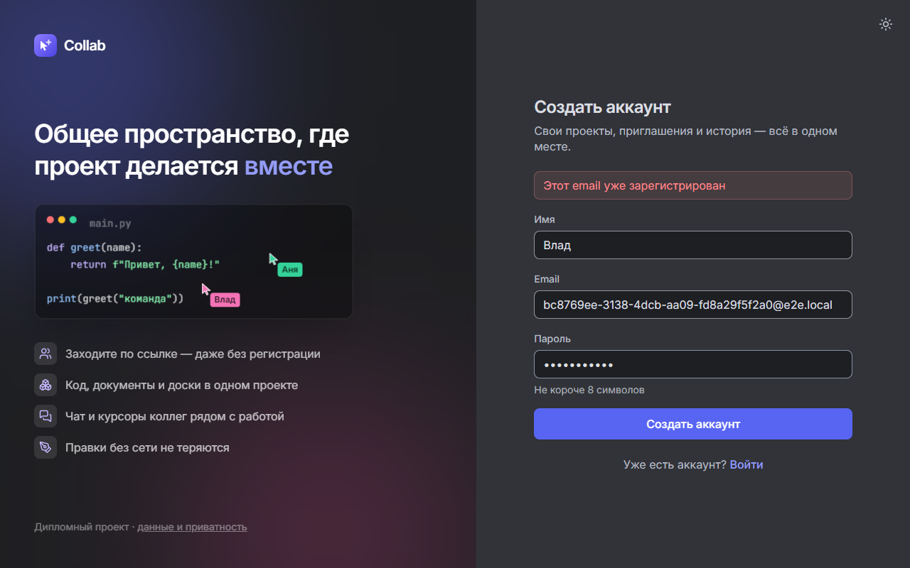
Экран 2 — Регистрация: «Этот email уже зарегистрирован». Правило пароля видно заранее под полем, а не после ошибкиЭкран 3 — Приглашение: роль видна до входа; пока имя пустое, главная кнопка неактивна. Под полем — зачем нужно имя и ссылка на то, какие данные хранятся
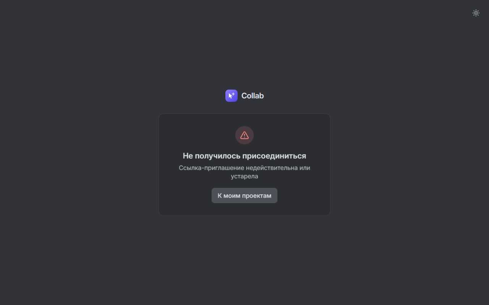
Экран 4 — Ссылка недействительна: причина простыми словами и один понятный выход
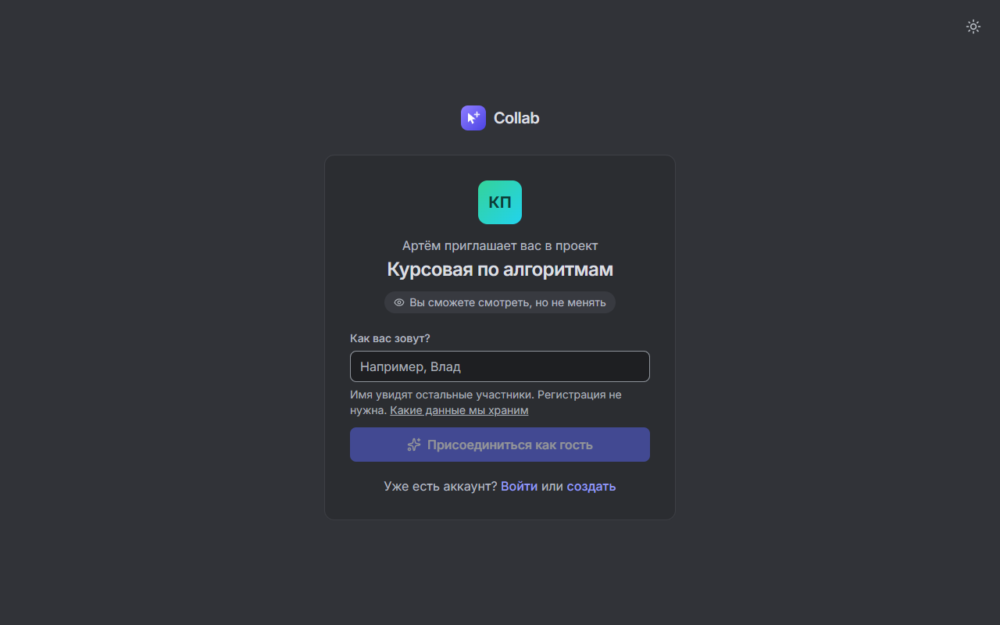
Экран 5 — Ссылка только для просмотра: человек знает заранее, что не сможет менять файлы
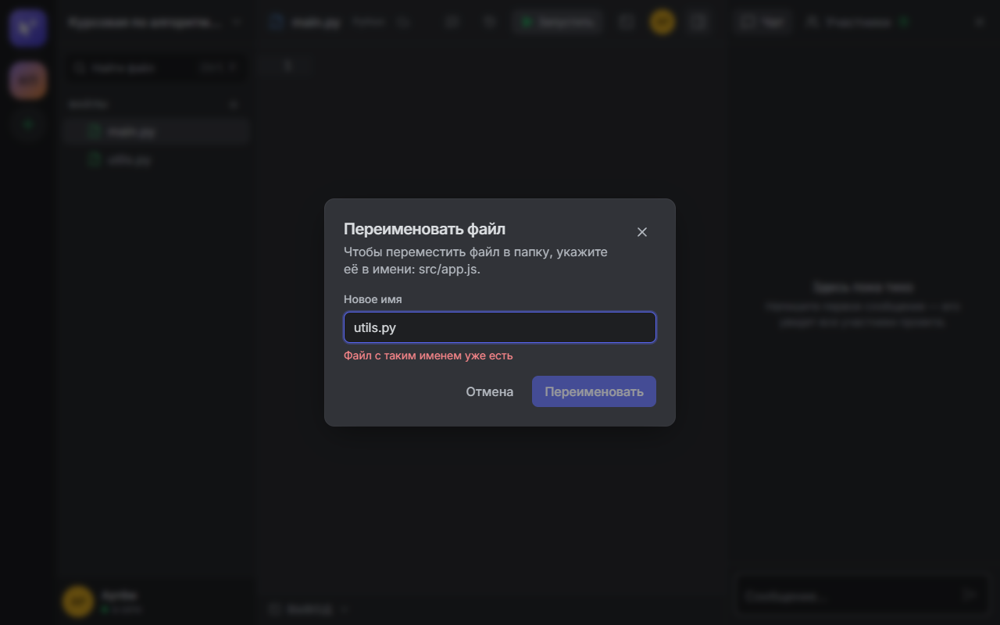
Экран 6 — Переименование: ошибка видна во время ввода, кнопка неактивна, запрос на сервер не уходит
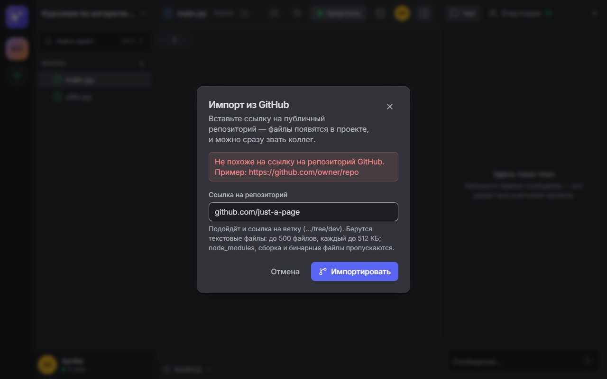
Экран 7 — Импорт из GitHub: ошибка с примером правильной ссылки; под полем — какие ссылки подходят и какие файлы будут пропущены
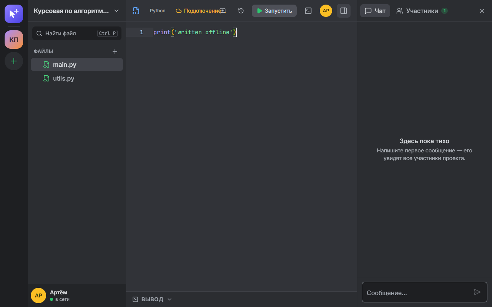
Экран 8 — Связь оборвалась: шапка показывает «Подключение…», а пользователь продолжает печатать
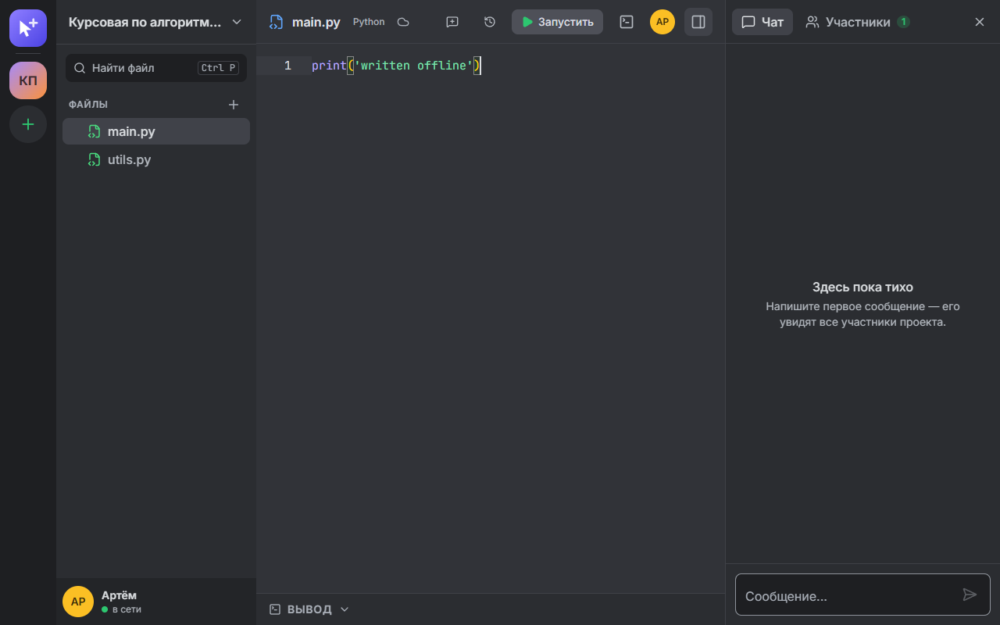
Экран 9 — Связь вернулась: «Синхронизировано», правки, сделанные без связи, на месте и видны остальным
8. Правила текстов ошибок
Сказать, что случилось, и что делать дальше: «Попробуйте ещё раз», «Пример: …».
Без кодов и технических слов: не «404», а «Ссылка-приглашение недействительна или устарела».
Ошибку поля показывать под этим полем и во время ввода, если её можно проверить без сервера.
Ошибку от сервера показывать одной плашкой над формой (role="alert"), введённые данные не стирать.
Если действие сейчас невозможно, кнопка неактивна, а рядом видно почему.
При входе не уточнять, что именно неверно: это защищает аккаунты.